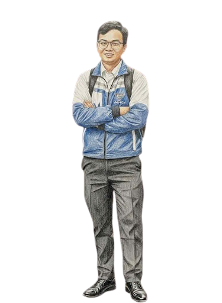

<!doctype html>
<html lang="en">
<head>
<meta charset="utf-8">
<meta name="viewport" content="width=device-width,initial-scale=1">
<title>Educational Psychology — Midterm Revision</title>
<style>
:root{--bg:#f5f7fb;--card:#fff;--ink:#172033;--muted:#687386;--line:#e5e9f2;--primary:#5b5ce2;--primary2:#7778ff;--green:#19a974;--red:#e34d59;--yellow:#f4b740;--shadow:0 12px 35px rgba(31,41,65,.09);--radius:22px}*{box-sizing:border-box}body{margin:0;font-family:Inter,system-ui,-apple-system,Segoe UI,Roboto,Arial,sans-serif;background:var(--bg);color:var(--ink)}button,input{font:inherit}button{border:0;cursor:pointer}.app{min-height:100vh}.topbar{height:70px;background:#fff;border-bottom:1px solid var(--line);display:flex;align-items:center;justify-content:space-between;padding:0 28px;position:sticky;top:0;z-index:20}.brand{font-weight:900;letter-spacing:-.5px}.brand span{color:var(--primary)}.topstats{display:flex;gap:10px;align-items:center}.pill{background:#f1f3f9;border:1px solid var(--line);padding:8px 12px;border-radius:999px;font-weight:800;font-size:13px}.shell{max-width:1180px;margin:auto;padding:28px 20px 60px}.hero{display:grid;grid-template-columns:1.25fr .75fr;gap:20px;align-items:stretch}.card{background:var(--card);border:1px solid var(--line);border-radius:var(--radius);box-shadow:var(--shadow)}.hero-main{padding:34px}.eyebrow{color:var(--primary);font-weight:900;font-size:13px;text-transform:uppercase;letter-spacing:1.2px}.hero h1{font-size:clamp(32px,5vw,58px);line-height:1.02;margin:10px 0 15px;letter-spacing:-2px}.hero p{color:var(--muted);font-size:17px;line-height:1.6;max-width:700px}.actions{display:flex;gap:10px;flex-wrap:wrap;margin-top:22px}.btn{padding:12px 17px;border-radius:14px;font-weight:900;transition:.15s transform,.15s opacity}.btn:hover{transform:translateY(-1px)}.primary{background:var(--primary);color:#fff}.secondary{background:#eef0ff;color:#4546bb}.ghost{background:#f4f5f8;color:var(--ink)}.danger{background:#fff0f1;color:#b32634}.hero-side{padding:25px;display:flex;flex-direction:column;justify-content:space-between}.stat-big{font-size:45px;font-weight:950}.muted{color:var(--muted)}.progress{height:11px;background:#edf0f6;border-radius:999px;overflow:hidden}.progress>i{display:block;height:100%;background:linear-gradient(90deg,var(--primary),var(--primary2));border-radius:inherit}.section{margin-top:24px}.section-title{display:flex;justify-content:space-between;align-items:end;margin-bottom:13px}.section-title h2{margin:0;font-size:22px}.grid4{display:grid;grid-template-columns:repeat(4,1fr);gap:14px}.chapter{padding:20px}.chapter .num{width:42px;height:42px;border-radius:13px;background:#eef0ff;color:var(--primary);display:grid;place-items:center;font-weight:950}.chapter h3{margin:14px 0 7px}.chapter p{margin:0;color:var(--muted);line-height:1.45;font-size:14px}.chapter .mini{margin-top:16px;font-size:12px;font-weight:800;color:var(--muted)}.page-head{display:flex;gap:12px;align-items:center;margin-bottom:18px}.back{padding:10px 13px;border-radius:12px;background:#fff;border:1px solid var(--line);font-weight:900}.page-head h1{margin:0}.toolbar{display:flex;gap:10px;flex-wrap:wrap;margin-bottom:18px}.search{flex:1;min-width:220px;padding:13px 15px;border:1px solid var(--line);border-radius:14px;outline:none;background:#fff}.search:focus{border-color:var(--primary)}.concept-grid{display:grid;grid-template-columns:repeat(2,1fr);gap:14px}.concept{padding:21px}.concept .tag{font-size:11px;font-weight:950;color:var(--primary);text-transform:uppercase}.concept h3{margin:8px 0}.concept p{color:var(--muted);line-height:1.55;margin:0}.tip{margin-top:14px;padding:11px 13px;background:#faf7e9;border-radius:12px;color:#705713;font-size:13px;font-weight:700}.quiz-wrap{max-width:950px;margin:auto}.quiz-layout{display:grid;grid-template-columns:250px 1fr;gap:18px}.character-card{padding:16px;text-align:center;position:sticky;top:90px;height:max-content}.character-box{height:270px;display:flex;align-items:flex-end;justify-content:center;overflow:hidden;border-radius:18px;background:linear-gradient(180deg,#f4f6ff,#eef0f8)}.character{height:255px;max-width:100%;object-fit:contain;display:block}.char-placeholder{font-size:70px;padding-bottom:50px}.char-talk{animation:talkBob .18s infinite alternate}.char-happy{animation:happyBob .28s infinite alternate ease-in-out}.char-stomp{animation:stomp .32s infinite alternate ease-in-out}.char-stomp2{transform:translateY(9px) rotate(-1deg)}@keyframes talkBob{from{transform:translateY(0)}to{transform:translateY(-2px)}}@keyframes happyBob{from{transform:translateY(0)}to{transform:translateY(-13px)}}@keyframes stomp{from{transform:translateY(-5px) rotate(0)}to{transform:translateY(8px) rotate(1deg)}}.bubble{margin-top:12px;text-align:left;background:#fff;border:2px solid var(--line);padding:13px 14px;border-radius:16px;min-height:85px;font-weight:800;line-height:1.45;position:relative}.bubble:before{content:"";position:absolute;left:28px;top:-9px;width:16px;height:16px;background:#fff;border-left:2px solid var(--line);border-top:2px solid var(--line);transform:rotate(45deg)}.quiz-card{padding:27px}.q-meta{display:flex;justify-content:space-between;gap:10px;align-items:center;color:var(--muted);font-size:13px;font-weight:800}.q-text{font-size:25px;line-height:1.35;margin:17px 0 20px;font-weight:950}.options{display:grid;gap:11px}.option{padding:15px 17px;text-align:left;background:#fff;border:2px solid var(--line);border-radius:15px;font-weight:800;color:var(--ink);transition:.15s}.option:hover{border-color:#aeb1ff}.option.selected{border-color:var(--primary);background:#f1f1ff}.option.correct{border-color:var(--green);background:#eaf9f2;color:#08734e}.option.wrong{border-color:var(--red);background:#fff0f1;color:#b32634}.feedback{margin-top:17px;padding:16px;border-radius:16px;border:1px solid var(--line);background:#f8f9fc;line-height:1.55}.feedback.good{background:#edfaf4;border-color:#bfead6}.feedback.bad{background:#fff2f3;border-color:#f2c3c8}.input-answer{width:100%;padding:15px;border:2px solid var(--line);border-radius:14px;outline:none}.input-answer:focus{border-color:var(--primary)}.scenario-actions{display:flex;gap:10px;flex-wrap:wrap}.result{padding:30px;text-align:center}.result-score{font-size:65px;font-weight:950;color:var(--primary)}.mistake-item{padding:18px;margin-bottom:12px}.mistake-item h3{margin:0 0 8px;font-size:16px}.mistake-item p{color:var(--muted);margin:6px 0;line-height:1.5}.answer-line{padding:9px 11px;border-radius:10px;margin-top:7px;font-size:14px}.wrongline{background:#fff0f1;color:#a62632}.rightline{background:#eaf9f2;color:#08734e}.achievement-grid{display:grid;grid-template-columns:repeat(3,1fr);gap:14px}.achievement{padding:20px}.achievement.locked{opacity:.48}.achievement .icon{font-size:32px}.achievement h3{margin:9px 0 5px}.flash{max-width:700px;margin:auto;padding:35px;text-align:center}.flash-front{font-size:13px;color:var(--primary);font-weight:950;text-transform:uppercase}.flash-key{font-size:35px;font-weight:950;margin:16px 0}.flash-answer{font-size:18px;line-height:1.65;color:var(--muted)}.empty{padding:40px;text-align:center;color:var(--muted)}.toast{position:fixed;right:22px;bottom:22px;background:#171b29;color:#fff;padding:13px 16px;border-radius:14px;font-weight:850;box-shadow:var(--shadow);opacity:0;transform:translateY(12px);pointer-events:none;transition:.25s;z-index:99}.toast.show{opacity:1;transform:none}.music{position:fixed;left:18px;bottom:18px;z-index:30}.music button{border-radius:999px;background:#fff;border:1px solid var(--line);padding:10px 13px;box-shadow:var(--shadow);font-weight:900}.small{font-size:12px}.center{text-align:center}.divider{height:1px;background:var(--line);margin:20px 0}.kbd{font-family:ui-monospace,monospace;background:#f1f2f6;padding:2px 6px;border-radius:6px}@media(max-width:900px){.hero,.quiz-layout{grid-template-columns:1fr}.grid4{grid-template-columns:repeat(2,1fr)}.character-card{position:relative;top:0}.character-box{height:210px}.character{height:200px}}@media(max-width:600px){.topbar{padding:0 14px}.topstats .pill:nth-child(n+3){display:none}.shell{padding:18px 13px 50px}.hero-main{padding:24px}.grid4,.concept-grid,.achievement-grid{grid-template-columns:1fr}.hero h1{font-size:39px}.quiz-card{padding:20px}.q-text{font-size:21px}.character-box{height:190px}.character{height:180px}}
.char-click{filter:drop-shadow(0 8px 8px rgba(0,0,0,.12));transform-origin:50% 90%;animation:clickWobble .18s ease-out;}@keyframes clickWobble{0%{transform:rotate(0) translateY(0)}50%{transform:rotate(-7deg) translateY(-3px)}100%{transform:rotate(0) translateY(0)}}
</style>
</head>
<body>
<div id="app"></div>
<div class="toast" id="toast"></div>
<div class="music" id="musicControl"></div>
<script>
'use strict';

/* =========================================================
   EDUCATIONAL PSYCHOLOGY — FULL INTERACTIVE REVISION APP
   Put these files beside index.html on GitHub Pages:
   character_closed.png
   character_open.png
   character_happy.png
   character_confused.png
   character_raise_leg.png
   character_stomp_leg.png
   background_music.mp3
   text.mp3
   right.mp3 / wrong.mp3 / xp.mp3
   ========================================================= */

const CHAPTERS={
  1:{title:'Memory & Understanding',desc:'Memory, schemas, deep processing and effective learning.',icon:'🧠'},
  2:{title:'Cognition',desc:'Attention, working memory, executive function and distraction.',icon:'💡'},
  3:{title:'Self-theories',desc:'Self-esteem, self-concept, goals and mindset.',icon:'🪞'},
  4:{title:'Creativity',desc:'Creative thinking, association, incubation and idea generation.',icon:'✨'}
};

const MEMORY={
1:[
 ['Memory','Any lasting change in how we think, feel or act.','Think: memory = lasting change.'],
 ['Declarative memory','Knowledge you know and can explain in words.','DECLARE it with words.'],
 ['Non-declarative memory','Skills/knowledge shown through performance, such as riding a bicycle.','You DO it rather than explain it.'],
 ['Three steps','Encoding → Storage → Retrieval.','ESR = Encode, Store, Retrieve.'],
 ['Brain ≠ video recorder','Memory is reconstructive, so it can be distorted.','Your brain rebuilds; it does not simply replay.'],
 ['Loftus (2005)','Memories can be distorted; some remembered events never happened.','Memory can be changed.'],
 ['Schacter (2001)','Child witnesses can be easily influenced by leading questions.','Leading questions can lead memory.'],
 ['Kornell et al. (2011)','Simple repetition can increase confidence without producing better long-term learning.','Feeling fluent ≠ learning deeply.'],
 ['Counterintuitive','True, but different from what people expect.','Counter = against expectations.'],
 ['Soderstrom & Bjork (2015)','Short-term gains are an unreliable guide to long-term learning.','Fast improvement ≠ durable learning.'],
 ['Schema','A group of connected ideas about one topic in the mind.','Schema = mental network.'],
 ['Bartlett','People changed stories to fit their own culture.','Culture can reshape recall.'],
 ['Deep processing','Thinking about meaning, e.g. writing a true sentence about your own life with a word.','Meaning beats surface repetition.'],
 ['Hyde & Jenkins (1973)','The group trying hard to learn words for a test remembered better.','Intentional learning helped recall.'],
 ['Yerkes-Dodson','Performance is best at medium arousal.','Too little / too much = worse; middle = best.'],
 ['Limited attention','Attention is limited, so long passive lessons can overload learners.','Chunk + vary activities.'],
 ['Retrieval practice','Actively bringing information back to mind improves learning.','Close notes → recall.'],
 ['Spacing effect','Revisit material over time instead of cramming.','Many small returns beat one cram.'],
 ['Interleaving','Mix related problem types instead of practising one type in a block.','Mix it up.'],
 ['Desirable difficulty','Some effortful learning conditions feel harder but can improve durable learning.','Harder now can help later.']
],
2:[
 ['Cognition','Thinking/reasoning — what is going on in the mind now.','Cognition = mental activity.'],
 ['Attention + thinking','Cognition depends on attention and thinking.','Attention is the gate.'],
 ['Limited resource','Attention is limited, so competing information matters.','One brain, limited bandwidth.'],
 ['Working memory','More useful than “short-term memory” because information is actively held and manipulated, not merely stored.','Working = hold + work.'],
 ['Gathercole et al. (2004)','Working-memory capacity increases steadily from about age 5 to 14.','Capacity grows with development.'],
 ['Simons et al. (2016)','Brain-training gains generally do not transfer beyond the trained task.','Train one task ≠ smarter everywhere.'],
 ['Executive function','Does not include simply storing information for a few seconds.','Executive = control, not passive storage.'],
 ['Prefrontal cortex','Important for executive functions.','PFC = planning/control.'],
 ['Blakemore & Choudhury (2006)','Prefrontal cortex continues developing until at least the early twenties.','Teen brain still developing.'],
 ['Steinberg (2007)','Adolescent decisions are strongly influenced by the presence of peers.','Peers can change choices.'],
 ['Traffic noise','Constant traffic noise can lead to poorer reading comprehension.','Background noise competes for attention.'],
 ['Ching (2017)','Maths anxiety can harm learners with better executive abilities.','Anxiety consumes mental resources.'],
 ['Distraction','Distraction can come from outside the learner.','External noise/content can pull attention.'],
 ['Risko et al. (2012)','Mind-wandering occurs for a substantial amount of time, around 40%.','The mind wanders a lot.'],
 ['Ravizza et al. (2014)','Non-academic internet use is negatively related to test performance for all learners.','Unrelated browsing hurts performance.'],
 ['Familiarity ≠ understanding','Recognising notes can feel like knowing them.','Test yourself, don’t just recognise.'],
 ['Scaffolding','Break demanding tasks into smaller stages when learners’ working memory/executive function is developing.','Small steps.']
],
3:[
 ['Self-theories','People’s beliefs about themselves.','Your theory of “me”.'],
 ['Dweck (2000)','Self-theories are meaning systems.','Beliefs give meaning to experiences.'],
 ['Self-esteem','A global feeling of how much you value yourself.','How much do I value me?'],
 ['William James','Self-esteem can be represented as success divided by pretensions.','Success ÷ expectations.'],
 ['Coopersmith','One dimension is not intelligence.','Don’t confuse self-esteem dimensions with IQ.'],
 ['Power','A sense of control over your own life.','Power = control.'],
 ['Harter’s five domains','Musical talent is not one of Harter’s five domains in this revision.','Remember what belongs — and what does not.'],
 ['Baumeister','Aggressive people tend to have high self-esteem.','High self-esteem is not automatically healthy behaviour.'],
 ['Baumeister et al. (2003)','High self-esteem was linked to more risky behaviour.','High self-esteem ≠ always safe.'],
 ['Self-esteem & academic results','The relationship is modest; self-esteem seems to follow success more than create it.','Success can raise self-esteem.'],
 ['Self-esteem programmes','They did not improve results and sometimes backfired.','Boosting feelings alone ≠ achievement.'],
 ['Academic self-concept','Belief about one’s ability in a school subject.','“I’m good at English.”'],
 ['Tiedemann (2000)','Academic self-concept appears around ages 7–9.','Subject-self beliefs emerge early.'],
 ['Social comparison','From around age 10/11, children increasingly judge their ability by comparing with classmates.','Me vs classmates.'],
 ['Marsh reciprocal effects','Academic self-concept and achievement affect each other over time.','Belief ↔ achievement.'],
 ['Fixed mindset','A learner may interpret failure as proof of low ability and withdraw.','Failure becomes “I can’t”.'],
 ['Mastery focus','Reward progress, strategies and effective learning choices rather than only comparison.','Process > trophy.']
],
4:[
 ['Creativity','Producing something new and useful.','NEW + USEFUL.'],
 ['Big C','Creativity that changes a whole field and is recognised by experts.','Big impact.'],
 ['Small c','Everyday creativity in life and school work.','Small scale, still creative.'],
 ['Jauk et al. (2013)','The link between very high IQ and creative success is weak beyond an above-average level.','More IQ does not endlessly mean more creativity.'],
 ['Csikszentmihalyi (1996)','Creative people do not all share identical early careers.','Creativity has varied paths.'],
 ['Creating','Rearranging existing parts into something new and useful.','Old pieces → new useful combination.'],
 ['Cropley & Cropley (2010)','Creativity is at least partly a group process.','Ideas can be social.'],
 ['Gick & Holyoak (1983)','Analogy is easier when learners study two or more previous examples.','More examples → easier analogy.'],
 ['Principle 1','Creativity cannot happen without factual/conceptual understanding.','Knowledge is creative fuel.'],
 ['Association','Mental linking of two ideas or things.','Idea A ↔ Idea B.'],
 ['Wilson (2016)','Objects with the most potential for creative uses were also recalled best.','Useful possibilities aid memory.'],
 ['After REM sleep','Moments straight after REM sleep can be a hyper-associative state.','REM → unusual connections.'],
 ['Divergent thinking','Generating many possible answers.','Diverge = many paths.'],
 ['Convergent thinking','Using logic to find one correct solution.','Converge = one answer.'],
 ['Fluency','How many ideas are produced.','Fluency = quantity of ideas.'],
 ['Incubation','Creative work can benefit from time away and returning later.','Pause → return → connect.'],
 ['Brainstorming','Generate ideas before judging them.','Quantity first, judgement later.']
]};

const QUESTIONS=[];
function add(ch,type,q,opts,ans,exp,sec='MCQ'){QUESTIONS.push({id:'q'+(QUESTIONS.length+1),ch,type,q,opts,ans,exp,sec});}
function addMC(ch,items){items.forEach(x=>add(ch,'mc',x[0],x[1],x[2],x[3],'MCQ'));}
function addTF(ch,items){items.forEach((x,i)=>add(ch,'tf',x[0],['True','False'],x[1],x[2]||'Check the key idea from the revision.', 'T/F'));}

addMC(1,[
['What is memory?',['Any lasting change in how we think, feel or act','A temporary feeling only','Only facts stored in books','Only physical movement'],'Any lasting change in how we think, feel or act','Memory is defined here as a lasting change in thinking, feeling or acting.'],
['What is declarative memory?',['Knowledge you know and can explain in words','A bicycle-riding skill','An automatic reflex','A temporary emotion'],'Knowledge you know and can explain in words','Declarative knowledge can be consciously stated or explained.'],
['Riding a bicycle is mainly what type of memory?',['Non-declarative memory','Declarative memory','Echoic memory','Semantic forgetting'],'Non-declarative memory','Bicycle riding is a skill demonstrated through performance.'],
['Which sequence gives the three memory steps?',['Encoding → storage → retrieval','Revision → testing → grading','Attention → emotion → sleep','Storage → encoding → revision'],'Encoding → storage → retrieval','The three steps are encoding, storage and retrieval.'],
['Why is the brain not like a video recorder?',['Memory can be reconstructed and distorted','It records everything perfectly','It stores only images','It cannot store information'],'Memory can be reconstructed and distorted','Memory is reconstructive rather than a perfect recording.'],
['Loftus (2005) showed that…',['Memories can be distorted and some remembered events never happened','Memory is always exact','Only adults have memory errors','Repetition guarantees long-term learning'],'Memories can be distorted and some remembered events never happened','Loftus highlighted memory distortion and false memories.'],
['According to Schacter (2001), child witnesses can be easily influenced by…',['Leading questions','Quiet rooms','Long breaks','Spelling tests'],'Leading questions','Leading questions can influence children’s reports.'],
['Kornell et al. (2011) found simple repetition mainly gives…',['More confidence, not necessarily more long-term learning','Guaranteed durable learning','Lower confidence','No change at all'],'More confidence, not necessarily more long-term learning','Simple repetition can feel fluent and increase confidence without guaranteeing durable learning.'],
['Counterintuitive means…',['True but different from what people expect','Obviously false','Easy to memorise','Impossible to explain'],'True but different from what people expect','Counterintuitive ideas go against common expectations.'],
['Soderstrom & Bjork (2015) suggest short-term gains are…',['An unreliable guide to long-term learning','A perfect predictor of long-term learning','Always harmful','More important than retrieval'],'An unreliable guide to long-term learning','Short-term performance can mislead us about durable learning.'],
['What is a schema?',['A group of connected ideas about one topic','A single isolated fact','A memory test','A type of anxiety'],'A group of connected ideas about one topic','A schema is a connected knowledge structure.'],
['What happened in Bartlett’s story study?',['Participants changed stories to fit their own culture','Participants remembered every word exactly','Participants learned by flashcards','Participants forgot all stories immediately'],'Participants changed stories to fit their own culture','Recall was shaped by existing cultural schemas.'],
['Which is an example of deep processing?',['Writing a true sentence about your own life using the word','Copying the word 20 times','Looking at the word once','Reading the word aloud without thinking about meaning'],'Writing a true sentence about your own life using the word','Connecting a word to personal meaning is deeper processing.'],
['What did Hyde & Jenkins (1973) find?',['Those trying hard to learn words for a test remembered better','Nobody could remember words','Repetition never works','Only children remembered words'],'Those trying hard to learn words for a test remembered better','Intentional learning effort improved memory in the study.'],
['Yerkes-Dodson suggests performance is best at…',['Medium arousal','Zero arousal','Maximum arousal','Any level of arousal'],'Medium arousal','Performance is often best at a moderate level of arousal.']
]);
addTF(1,[
['Memory is exactly like a video recording.','False','Memory is reconstructive and can be distorted.'],
['Declarative memory is knowledge that can be explained in words.','True'],
['Riding a bicycle is an example of non-declarative memory.','True'],
['Revision is one of the three basic memory steps.','False','The three are encoding, storage and retrieval.'],
['Leading questions cannot affect child witnesses.','False'],
['Simple repetition always produces strong long-term learning.','False'],
['Schemas can influence how people remember stories.','True'],
['Deep processing involves meaning.','True'],
['The spacing effect supports revisiting material over time.','True'],
['Yerkes-Dodson says maximum arousal always gives the best performance.','False','The revision says medium arousal is best.']
]);
[
['Mr Hung teaches passive voice for 40 minutes with 35 slides and students become tired. What is the best explanation?','Limited attention; reduce load, vary activities and use manageable chunks.'],
['Lan reads notes five times the night before, feels confident, but scores low. What should she change?','Re-reading can increase confidence without durable learning; use retrieval practice and spacing.'],
['Present perfect is taught in week 2 and never revisited; students do poorly in May. What should the teacher do?','Use spacing and retrieval practice: revisit the form over time and retrieve it.'],
['Minh always studies at the same desk, room and music but cannot recall in the exam. What can help?','Context can support retrieval; vary study conditions and practise retrieval in different contexts.'],
['Students do 20 present-perfect gap fills in a row, get 19/20, then confuse past simple and present perfect next week. What is missing?','Interleaving and retrieval; mixing related forms gives more useful practice than blocked repetition.']
].forEach(x=>add(1,'scenario',x[0],null,x[1],x[1],'Scenario'));
[
['Fill the blank: New learning can be strengthened when memories ______.','consolidate','Consolidation helps new memories become more stable.'],
['Fill the blank: Actively bringing information back to mind is ______.','retrieval practice','Retrieval practice means recalling information rather than simply rereading it.'],
['Fill the blank: A group of connected ideas about a topic is a ______.','schema','A schema is a connected mental knowledge structure.'],
['Fill the blank: Revisiting learning over time is the ______.','spacing effect','Spacing spreads learning across time.'],
['Fill the blank: Mixing related problem types is called ______.','interleaving','Interleaving means mixing types instead of blocking one type.'],
['Fill the blank: Effortful learning conditions that can support durable learning are called ______.','desirable difficulty','Desirable difficulties can feel harder but support long-term learning.'],
['Fill the blank: Knowledge that can be explained in words is ______ memory.','declarative','Declarative memory is consciously expressible knowledge.'],
['Fill the blank: Skills such as riding a bicycle use ______ memory.','non-declarative','Non-declarative knowledge is shown through performance.'],
['Fill the blank: The first memory step is ______.','encoding','Encoding is the process of getting information into memory.'],
['Fill the blank: Thinking about meaning is called ______ processing.','deep','Deep processing focuses on meaning.']
].forEach(x=>add(1,'fill',x[0],null,x[1],x[2],'Fill'));

addMC(2,[
['Cognition refers to…',['Thinking/reasoning and what is going on in the mind now','Only physical movement','Only emotions','Only long-term memory'],'Thinking/reasoning and what is going on in the mind now','Cognition is mental activity such as thinking and reasoning.'],
['Cognition depends especially on…',['Attention and thinking','Sleep and height','Music and handwriting','Muscle strength and speed'],'Attention and thinking','Attention and thinking are central to cognition.'],
['Attention is best understood as…',['A limited resource','An unlimited resource','A physical muscle','A type of memory error'],'A limited resource','Attention has limited capacity.'],
['Why is working memory more useful as a concept than passive short-term memory?',['It actively holds and manipulates information','It stores everything permanently','It never gets overloaded','It works without attention'],'It actively holds and manipulates information','Working memory involves active processing.'],
['Gathercole et al. (2004) found working-memory capacity…',['Increases steadily from about age 5 to 14','Stops developing at age 3','Decreases from age 5 to 14','Is identical at every age'],'Increases steadily from about age 5 to 14','The revision gives a steady increase across ages 5–14.'],
['Simons et al. (2016) found brain-training gains…',['Do not generally transfer beyond the trained task','Transfer to every school subject','Always reduce attention','Only affect physical skills'],'Do not generally transfer beyond the trained task','Training a task does not necessarily create broad cognitive transfer.'],
['Which is NOT an executive function?',['Simply storing information for a few seconds','Planning','Controlling attention','Managing behaviour'],'Simply storing information for a few seconds','Simple short-term storage is not itself an executive function.'],
['The prefrontal cortex is especially involved in…',['Executive functions','Digestion','Hearing only','Balance only'],'Executive functions','The prefrontal cortex supports planning and control.'],
['Blakemore & Choudhury (2006) suggest the prefrontal cortex develops until at least…',['The early twenties','Age 5','Age 10','Age 13'],'The early twenties','The revision highlights continued development into the early twenties.'],
['Steinberg (2007) found adolescent decisions are strongly influenced by…',['The presence of peers','Weather only','Handwriting','Vocabulary size'],'The presence of peers','Peer presence can strongly influence adolescent decisions.'],
['Constant traffic noise can cause…',['Poorer reading comprehension','Better reading comprehension','No possible effect','Higher vocabulary automatically'],'Poorer reading comprehension','Background noise competes for attention.'],
['Ching (2017) found maths anxiety can harm learners with…',['Better executive abilities','No executive abilities','Only poor spelling','Only strong memory'],'Better executive abilities','Maths anxiety can consume cognitive resources even for learners with stronger executive abilities.'],
['Distraction can come from…',['Outside the learner','Only from textbooks','Only from memory','Nowhere'],'Outside the learner','External sources can capture attention.'],
['Risko et al. (2012) reported mind-wandering for around…',['40% of the time','1% of the time','5% of the time','90% of the time'],'40% of the time','The revision gives around 40%.'],
['Ravizza et al. (2014) found non-academic internet use was…',['Negatively related to test performance for all learners','Always helpful','Unrelated to performance','Helpful only during tests'],'Negatively related to test performance for all learners','Unrelated browsing can interfere with performance.']
]);
addTF(2,[
['Attention is an unlimited resource.','False'],['Working memory actively processes information.','False','The revision contrasts active working memory with passive short-term storage.'],['Brain training automatically improves every cognitive skill.','False'],['The prefrontal cortex is involved in executive function.','True'],['The prefrontal cortex develops into the early twenties.','True'],['Peer presence can influence adolescent decisions.','False','The revision says decisions are strongly influenced by peers.'],['Constant traffic noise always improves reading.','False'],['Maths anxiety can consume cognitive resources.','True'],['Mind-wandering never happens during learning.','False'],['Non-academic internet use is negatively related to test performance.','True']
]);
[
['A teacher reads slides aloud while students copy everything. What is the main problem?','Working memory may be overloaded; reduce information and stop requiring students to copy everything.'],
['A student keeps saying “I have been in Hanoi since two years” despite correction. Why might correction alone fail?','Feedback alone may not make the learner actively retrieve/process the correct form; use active retrieval, meaningful use and check later.'],
['Seven-year-olds must plan, write and check a three-paragraph story in one lesson. What should change?','Working memory/executive function is still developing; break the task into smaller stages and scaffold it.'],
['Students say they understand everything but score 4/10. What is the likely problem?','Familiarity has been mistaken for understanding; use retrieval questions, application and low-stakes testing.'],
['A worksheet has cartoons, quotes and coloured borders everywhere. Why can this hurt?','Unnecessary distraction consumes limited attention without necessarily improving learning.']
].forEach(x=>add(2,'scenario',x[0],null,x[1],x[1],'Scenario'));

addMC(3,[
['Self-theories are…',['People’s beliefs about themselves','Only academic grades','Only emotions','Physical skills'],'People’s beliefs about themselves','Self-theories concern beliefs people hold about themselves.'],
['Dweck (2000) describes self-theories as…',['Meaning systems','Memory stores','IQ scores','Study schedules'],'Meaning systems','They help people interpret experiences.'],
['Self-esteem is…',['A global feeling of how much you value yourself','A specific grammar skill','A school subject','A memory strategy'],'A global feeling of how much you value yourself','Self-esteem is a global evaluation of self-worth.'],
['William James represented self-esteem as roughly…',['Success divided by pretensions','Pretensions divided by success','IQ plus success','Success minus memory'],'Success divided by pretensions','This is the formula in the revision.'],
['Which is NOT a Coopersmith dimension in this revision?',['Intelligence','Power','Significance','Virtue'],'Intelligence','The revision specifically identifies intelligence as the item that is not a dimension.'],
['Power refers to…',['Control over your own life','Being the smartest student','Winning every competition','Having many friends'],'Control over your own life','Power is a sense of personal control.'],
['Which is NOT one of Harter’s five domains in this revision?',['Musical talent','Scholastic competence','Social acceptance','Athletic competence'],'Musical talent','Musical talent is the item identified as not belonging.'],
['Baumeister reported that aggressive people tend to have…',['High self-esteem','No self-esteem','Very low IQ','No goals'],'High self-esteem','The revision warns that high self-esteem does not automatically mean healthy behaviour.'],
['Baumeister et al. (2003) linked high self-esteem with…',['More risky behaviour','Perfect academic results','Better memory','Less social comparison'],'More risky behaviour','The revision reports a link with risky behaviour.'],
['The relationship between self-esteem and academic results is…',['Modest; self-esteem seems to follow success','Perfect and causal','Always negative','Non-existent in every case'],'Modest; self-esteem seems to follow success','The relationship is modest and self-esteem may follow achievement.'],
['Self-esteem programmes…',['Did not improve results and sometimes backfired','Always improved results','Only helped maths','Guaranteed higher IQ'],'Did not improve results and sometimes backfired','The revision explicitly says they did not improve results and sometimes backfired.'],
['Academic self-concept is…',['A belief about ability in a school subject','A global feeling only','A memory system','A type of creativity'],'A belief about ability in a school subject','It is subject-specific belief about competence.'],
['Tiedemann (2000) suggests academic self-concept appears around…',['Age 7–9','Age 2–3','Age 15–18','Age 25'],'Age 7–9','The revision gives ages 7–9.'],
['From about age 10/11, children increasingly judge their ability by…',['Comparing with classmates','Ignoring everyone else','Only asking parents','Counting vocabulary words'],'Comparing with classmates','Social comparison becomes more important.'],
['Marsh’s reciprocal effects mean…',['Self-concept and achievement affect each other over time','Only achievement affects self-concept','Only self-concept affects achievement','Neither affects the other'],'Self-concept and achievement affect each other over time','The relationship works in both directions over time.']
]);
addTF(3,[
['Self-theories are beliefs about oneself.','False','The statement is true; the revision defines self-theories as beliefs about oneself.'],
['Dweck describes self-theories as meaning systems.','True'],
['Self-esteem is a global feeling of self-value.','True'],
['William James’ formula is success divided by IQ.','False'],
['Power involves control over one’s own life.','True'],
['Musical talent is one of the five Harter domains listed in this revision.','False'],
['High self-esteem automatically guarantees healthy behaviour.','True','The statement is false: high self-esteem can also be linked with risky/aggressive behaviour.'],
['Academic self-concept concerns beliefs about ability in a school subject.','True'],
['Children never compare themselves with classmates.','False'],
['Marsh describes reciprocal effects between self-concept and achievement.','True']
]);
[
['A student says “I am just not a language person.” What should a teacher do?','Treat it as negative academic self-concept; give specific evidence of progress and achievable subject goals, avoiding global labels.'],
['Thu revises grammar she already knows and avoids a confusing tense. What is happening?','She may be avoiding difficulty/failure and protecting competence by staying with easy work.'],
['A “Top of the Class” prize is used as the main reward. What risk does this create?','It emphasises performance goals and comparison; reward progress, mastery and strategies instead.'],
['A teacher repeatedly says “You’re so clever!” Why can this be risky?','A fixed ability label can make later failure threatening; praise strategy, effort and effective learning choices.'],
['A good student fails one test and stops trying. What theory fits?','A fixed mindset: failure is interpreted as proof of low ability, so the learner withdraws to protect self-worth.']
].forEach(x=>add(3,'scenario',x[0],null,x[1],x[1],'Scenario'));

addMC(4,[
['Creativity means producing something…',['New and useful','New but useless','Old and copied','Only beautiful'],'New and useful','The revision defines creativity as new and useful.'],
['Big C creativity…',['Changes a whole field and is recognised by experts','Is only a classroom activity','Means making many ideas quickly','Means solving one puzzle'],'Changes a whole field and is recognised by experts','Big C has field-level impact and expert recognition.'],
['Small c creativity is…',['Everyday life and school work','Only world-changing inventions','Only professional art','Only IQ testing'],'Everyday life and school work','Small c refers to ordinary everyday creative activity.'],
['Jauk et al. (2013) found the link between very high IQ and creative success is…',['Weak beyond an above-average level','Perfect','Always negative','Impossible to measure'],'Weak beyond an above-average level','Beyond above-average IQ, the relationship becomes weak.'],
['Csikszentmihalyi (1996) suggests creative people…',['Do not all have identical early careers','Always follow the same career path','Must be artists','Never work with groups'],'Do not all have identical early careers','Creative development can follow varied paths.'],
['Creating involves…',['Rearranging existing parts into something new and useful','Making something from nothing','Copying one example','Memorising facts only'],'Rearranging existing parts into something new and useful','Creative products can recombine existing elements.'],
['Cropley & Cropley (2010) say creativity is at least partly…',['A group process','A memory error','A solo reflex','A fixed IQ score'],'A group process','The revision emphasises a social/group component.'],
['Gick & Holyoak (1983) found analogy is easier when…',['Two or more previous examples are studied','No examples are given','Only one word is memorised','Students avoid comparison'],'Two or more previous examples are studied','Multiple examples help learners notice analogical structure.'],
['Principle 1 says creativity cannot happen without…',['Factual/conceptual understanding','Perfect handwriting','High IQ','No rules at all'],'Factual/conceptual understanding','Knowledge provides material for creative work.'],
['Association is…',['A mental link between two ideas or things','A type of memory loss','A single answer','A test score'],'A mental link between two ideas or things','Association connects ideas mentally.'],
['Wilson (2016) found objects with the most potential for creative uses were also…',['Recalled best','Forgotten fastest','Never noticed','Always disliked'],'Recalled best','Creative-use potential and recall were linked in the revision.'],
['The moments straight after REM sleep can be…',['Hyper-associative','Completely inactive','Only convergent','Free of memory'],'Hyper-associative','The revision describes this period as hyper-associative.'],
['Divergent thinking produces…',['Many possible answers','One correct answer','No answers','Only factual answers'],'Many possible answers','Divergence expands the number of possibilities.'],
['Convergent thinking is like…',['A logic puzzle with one correct solution','A brainstorm with unlimited answers','Free association only','A memory card'],'A logic puzzle with one correct solution','Convergence narrows possibilities toward a correct solution.'],
['Fluency measures…',['How many ideas are produced','How beautiful ideas are','How difficult an idea is','How long a test takes'],'How many ideas are produced','Fluency is the quantity of ideas generated.']
]);
addTF(4,[
['Creativity means something can be new even if it is useless.','False','The revision requires both new and useful.'],
['Big C creativity is everyday classroom creativity.','False'],
['Small c creativity can happen in school work.','True'],
['Very high IQ guarantees creative success.','False'],
['Creative people all have identical early careers.','False'],
['Creating can involve rearranging existing parts.','True'],
['Creativity must always be a completely individual process.','False','The revision says it is at least partly a group process.'],
['Studying two or more examples can make analogy easier.','True'],
['Creativity needs factual/conceptual understanding.','True'],
['Fluency concerns the number of ideas produced.','True']
]);
[
['A student says “Grammar rules kill creativity.” What should the teacher explain?','Creativity needs factual/conceptual understanding; grammar provides material that learners can use creatively.'],
['Students must write a short story next month. What should happen first?','Prepare relevant language and conceptual knowledge first; build expertise over time.'],
['A creative project runs only Monday to Friday with no pause. What is missing?','Incubation/development time; give a longer period with pauses and opportunities to revisit.'],
['A very detailed template produces correct but dull work. Why?','Too much structure can reduce association and originality; leave space for alternatives.'],
['A student gives only three brainstorm ideas and stops. What should the teacher encourage?','Generate more ideas before judging them; extend brainstorming and focus on fluency first.']
].forEach(x=>add(4,'scenario',x[0],null,x[1],x[1],'Scenario'));

const STORAGE='eduPsychMidtermFullV1';
const defaultState={xp:0,streak:0,lastDay:'',answered:0,correct:0,mastered:[],mistakes:[],completed:{1:false,2:false,3:false,4:false},achievements:[],music:true};
let state=loadState();
function loadState(){try{const x=JSON.parse(localStorage.getItem(STORAGE));return x?{...defaultState,...x}:structuredClone(defaultState)}catch(e){return structuredClone(defaultState)}}
function save(){localStorage.setItem(STORAGE,JSON.stringify(state))}
function dayKey(){return new Date().toISOString().slice(0,10)}
function awardXP(n){state.xp+=n;updateStreak();save();play('xp.mp3');toast('+'+n+' XP ⚡')}
function updateStreak(){const d=dayKey();if(state.lastDay===d)return;const prev=new Date();prev.setDate(prev.getDate()-1);const p=prev.toISOString().slice(0,10);state.streak=state.lastDay===p?state.streak+1:1;state.lastDay=d}
function pct(){return Math.min(100,Math.round((state.mastered.length/QUESTIONS.length)*100))}
function toast(s){const t=document.getElementById('toast');t.textContent=s;t.classList.add('show');clearTimeout(toast.timer);toast.timer=setTimeout(()=>t.classList.remove('show'),1700)}

const audio={};
let musicPlaying=false;
let musicNeedsGesture=false;
function getAudio(file,loop=false){
  if(!audio[file]){audio[file]=new Audio(file);audio[file].preload='auto'}
  audio[file].loop=loop;
  return audio[file]
}
function play(file){try{const a=getAudio(file);a.currentTime=0;const p=a.play();if(p&&p.catch)p.catch(()=>{})}catch(e){}}
function startMusic(){
  if(!state.music || view!=='quiz') return;
  try{
    const a=getAudio('background_music.mp3',true);
    a.volume=.22;
    const p=a.play();
    if(p&&p.then){
      p.then(()=>{musicPlaying=true;musicNeedsGesture=false;renderMusic()})
       .catch(()=>{musicPlaying=false;musicNeedsGesture=true;renderMusic()});
    }else{musicPlaying=true;}
  }catch(e){musicPlaying=false;musicNeedsGesture=true;renderMusic()}
}
function stopMusic(){
  try{const a=getAudio('background_music.mp3');a.pause();a.currentTime=0;musicPlaying=false;musicNeedsGesture=false}catch(e){}
}
function musicToggle(){
  state.music=!state.music;save();
  if(state.music){startMusic()}else{stopMusic()}
  renderMusic()
}
function forceMusicStart(){
  if(view==='quiz'&&state.music){
    const a=getAudio('background_music.mp3',true);
    a.volume=.22;
    const p=a.play();
    if(p&&p.then)p.then(()=>{musicPlaying=true;musicNeedsGesture=false;renderMusic()}).catch(()=>{});
  }
}
function renderMusic(){
  const el=document.getElementById('musicControl');if(!el)return;
  let label=state.music?(musicPlaying?'🔊 Music ON':'▶️ Play Music'):'🔇 Music OFF';
  el.innerHTML='<button data-action="music">'+label+'</button>'
}

let view='home',chapter=1,mode='practice';
let quiz={questions:[],index:0,selected:null,checked:false,correct:0,startedAt:0,scenarioRevealed:false,scenarioSelf:null,answers:[],shouldTalkQuestion:true,dialogue:'question'};
let flash={items:[],index:0,revealed:false};

function shell(content){return '<div class="app"><header class="topbar"><div class="brand">EduPsych <span>Revision</span></div><div class="topstats"><span class="pill">⚡ '+state.xp+' XP</span><span class="pill">🔥 '+state.streak+' day</span><span class="pill">📈 '+pct()+'%</span></div></header><main class="shell">'+content+'</main></div>'}
function backButton(){return '<button class="back" data-action="home">← Home</button>'}
function chapterCard(c){const d=CHAPTERS[c];return '<div class="card chapter"><div class="num">'+d.icon+'</div><h3>Chapter '+c+' — '+d.title+'</h3><p>'+d.desc+'</p><div class="mini">'+MEMORY[c].length+' memory blocks · '+QUESTIONS.filter(q=>q.ch===c).length+' practice items</div><div class="actions"><button class="btn primary" data-action="learn" data-ch="'+c+'">Learn</button><button class="btn secondary" data-action="practice" data-ch="'+c+'">Test</button></div></div>'}
function home(){view='home';stopMusic();const done=Object.values(state.completed).filter(Boolean).length;return shell('<section class="hero"><div class="card hero-main"><div class="eyebrow">Educational Psychology · Midterm</div><h1>Study it.<br>Remember it.<br><span style="color:var(--primary)">Test it.</span></h1><p>A Duolingo-style revision space built from your Chapter 1–4 revision material. Learn the key idea, recall it, then test yourself.</p><div class="actions"><button class="btn primary" data-action="chapters">🚀 Start learning</button><button class="btn secondary" data-action="quick">⚡ Quick test</button><button class="btn ghost" data-action="mistakes">🔴 Mistakes '+(state.mistakes.length?state.mistakes.length:'')+'</button></div></div><div class="card hero-side"><div><div class="muted small">OVERALL PROGRESS</div><div class="stat-big">'+pct()+'%</div><div class="progress"><i style="width:'+pct()+'%"></i></div></div><div class="divider"></div><div><b>'+done+'/4 chapters completed</b><p class="muted">Keep returning to the material. Spacing + retrieval beats cramming.</p></div></div></section><section class="section"><div class="section-title"><h2>Chapters</h2><span class="muted small">'+QUESTIONS.length+' practice items</span></div><div class="grid4">'+[1,2,3,4].map(chapterCard).join('')+'</div></section><section class="section"><div class="grid4"><div class="card chapter"><div class="num">🃏</div><h3>Recall Cards</h3><p>Hide the answer and retrieve it from memory.</p><div class="actions"><button class="btn secondary" data-action="flash">Start</button></div></div><div class="card chapter"><div class="num">🏆</div><h3>Achievements</h3><p>Unlock rewards as your revision grows.</p><div class="actions"><button class="btn ghost" data-action="achievements">View</button></div></div><div class="card chapter"><div class="num">🔎</div><h3>Search</h3><p>Find a concept or question quickly.</p><div class="actions"><button class="btn ghost" data-action="search">Search</button></div></div><div class="card chapter"><div class="num">♻️</div><h3>Reset</h3><p>Clear saved progress and start fresh.</p><div class="actions"><button class="btn danger" data-action="reset">Reset</button></div></div></div></section>')}
function chapters(){view='chapters';return shell('<div class="page-head">'+backButton()+'<h1>Choose a chapter</h1></div><div class="grid4">'+[1,2,3,4].map(chapterCard).join('')+'</div>')}
function learn(){view='learn';const blocks=MEMORY[chapter];return shell('<div class="page-head">'+backButton()+'<div><h1>Chapter '+chapter+' — '+CHAPTERS[chapter].title+'</h1><div class="muted">Learn the ideas in small, memorable chunks.</div></div></div><div class="toolbar"><button class="btn primary" data-action="practice" data-ch="'+chapter+'">🎯 Test this chapter</button><button class="btn secondary" data-action="flash-ch" data-ch="'+chapter+'">🃏 Recall cards</button><input id="learnSearch" class="search" placeholder="Search this chapter…"></div><div id="conceptList" class="concept-grid">'+blocks.map((x,i)=>'<article class="card concept" data-concept="'+(x[0]+' '+x[1]+' '+x[2]).toLowerCase()+'"><div class="tag">Memory block '+(i+1)+'</div><h3>'+esc(x[0])+'</h3><p>'+esc(x[1])+'</p><div class="tip">🧠 '+esc(x[2])+'</div></article>').join('')+'</div>')}
function searchPage(){view='search';return shell('<div class="page-head">'+backButton()+'<h1>Search revision</h1></div><input id="globalSearch" class="search" placeholder="Try “spacing”, “prefrontal cortex”, “Big C”…"><div id="searchResults" class="section"></div>')}
function runSearch(term){const out=[];term=term.trim().toLowerCase();if(!term)return '<div class="empty">Type something to search.</div>';for(let c=1;c<=4;c++){MEMORY[c].forEach(x=>{if((x[0]+' '+x[1]).toLowerCase().includes(term))out.push('<div class="card concept"><div class="tag">Chapter '+c+' · Concept</div><h3>'+esc(x[0])+'</h3><p>'+esc(x[1])+'</p><button class="btn secondary" data-action="learn" data-ch="'+c+'">Open chapter</button></div>')})}QUESTIONS.filter(q=>q.q.toLowerCase().includes(term)).slice(0,20).forEach(q=>out.push('<div class="card concept"><div class="tag">Chapter '+q.ch+' · '+q.sec+'</div><h3>'+esc(q.q)+'</h3><button class="btn primary" data-action="single" data-id="'+q.id+'">Practice this</button></div>'));return out.length?'<div class="concept-grid">'+out.join('')+'</div>':'<div class="empty">No matching revision content.</div>'}

function setupQuiz(list, titleMode='Chapter test'){quiz={questions:list,index:0,selected:null,checked:false,correct:0,startedAt:Date.now(),scenarioRevealed:false,scenarioSelf:null,answers:[],titleMode,shouldTalkQuestion:true,dialogue:'question'};view='quiz';startMusic();render();setTimeout(()=>{if(view==='quiz'&&state.music&&!musicPlaying)startMusic()},50)}
function practice(ch){chapter=+ch;setupQuiz(shuffle(QUESTIONS.filter(q=>q.ch===chapter)), 'Chapter '+chapter+' test')}
function quick(){setupQuiz(shuffle(QUESTIONS).slice(0,20),'Quick test')}
function single(id){const q=QUESTIONS.find(x=>x.id===id);if(q)setupQuiz([q],'Single question')}
function retry(){const qs=state.mistakes.map(id=>QUESTIONS.find(q=>q.id===id)).filter(Boolean);if(!qs.length){toast('No mistakes to retry 🎉');return}setupQuiz(shuffle(qs),'Retry mistakes')}
function shuffle(a){return [...a].sort(()=>Math.random()-.5)}

function charFile(stateName){const files={closed:'character_closed.png',open:'character_open.png',happy:'character_happy.png',confused:'character_confused.png',raise:'character_raise_leg.png',stomp:'character_stomp_leg.png'};return files[stateName]}
let charAnimTimer=null,talkTimer=null,textTimer=null;
function clearCharTimers(){clearInterval(charAnimTimer);clearInterval(talkTimer);clearInterval(textTimer);charAnimTimer=talkTimer=textTimer=null}
function setCharacter(s,animate=''){const img=document.getElementById('characterImg');if(!img)return;img.src=charFile(s);img.className='character '+animate;img.onerror=()=>{img.style.display='none';const p=document.getElementById('charPlaceholder');if(p)p.style.display='block'}}

/* Click-the-character gag: a short push → fall → stand → dust animation. */
const CLICK_FRAMES=['push.png','fall.png','stand.png','dust right.png','dust_right.png'];
const CLICK_DIALOGUES=[
  "WHAT THE HELL?! Why did you do that?! 😭",
  "HEY! I was standing there! 💀",
  "Bro… did you just push me?!",
  "EXCUSE ME?! 😭",
  "I was helping you study! Why?!",
  "Okay… that was personal. 💀",
  "WHO PUSHED ME?!",
  "What was THAT for?! 😭",
  "You could've just answered the question! 😂",
  "I feel attacked. Literally.",
  "That was unnecessary! 😭",
  "Fine. I deserved none of that.",
  "Character abuse detected. 🚨",
  "I am reporting this to the study department.",
  "Seriously?! I was doing my job!"
];
let characterClickBusy=false;
let characterClickTimer=null;
function randomClickDialogue(){let last=dialogueLast.click,i;do{i=Math.floor(Math.random()*CLICK_DIALOGUES.length)}while(CLICK_DIALOGUES[i]===last&&CLICK_DIALOGUES.length>1);dialogueLast.click=CLICK_DIALOGUES[i];return CLICK_DIALOGUES[i]}
function clickFrame(file){const img=document.getElementById('characterImg');if(!img)return;img.style.display='block';const p=document.getElementById('charPlaceholder');if(p)p.style.display='none';img.src=file;img.className='character char-click'}
function characterClicked(){
  if(characterClickBusy)return;
  characterClickBusy=true;clearCharTimers();clearTimeout(characterClickTimer);
  play('scream.mp3');
  const bubble=document.getElementById('questionBubble');
  if(bubble)bubble.textContent='';
  const files=[
    ['push.png',220],
    ['fall.png',420],
    ['stand.png',650],
    ['dust right.png',900],
    ['dust_right.png',1120]
  ];
  let n=0;
  const step=()=>{
    if(n>=files.length){
      characterClickTimer=setTimeout(()=>{characterClickBusy=false;talkLine('click')},180);
      return;
    }
    clickFrame(files[n][0]);
    n++;
    characterClickTimer=setTimeout(step,files[n-1][1]);
  };
  step();
}

const DIALOGUES={
  question:[
    "Let's see… can you get this one?",
    "Okay, your turn! Think carefully.",
    "Hmm… I know you can figure this out!",
    "Alright, brain mode: ON. 🧠",
    "This one looks innocent… but is it? 👀",
    "No rush. A good answer needs a good thought.",
    "Let's see what your memory remembers.",
    "Careful… this question has a tiny trap. 😈",
    "You studied this. Somewhere in that brain of yours. 😭",
    "Focus! We've got a question to defeat.",
    "Think first, click second.",
    "Okay genius, show me what you've got. 😏",
    "One question at a time. We got this.",
    "Don't let the wording scare you.",
    "Your mission, should you choose to accept it: answer correctly. 🎮"
  ],
  selected:[
    "Are you sure about that?",
    "Hmm… is that really your answer?",
    "Take a second and think it through.",
    "Locking that answer in?",
    "Trust your memory… or check your thinking!",
    "Interesting choice… very interesting. 🤨",
    "You clicked that with confidence. I hope the confidence is justified. 😭",
    "Before we commit… does that actually make sense?",
    "Your brain said yes. Should we trust it? 👀",
    "Bold choice. I respect the bravery.",
    "Wait… think about the key idea again.",
    "That's your final answer? 👀",
    "Hmm. I'm not saying it's wrong… yet.",
    "You have selected your destiny. 💀",
    "Okay, I saw that click. No take-backs after Check! 😈"
  ],
  good:[
    "YES! You got it! 🎉",
    "Great job! That's correct!",
    "Nice one! Your memory is getting stronger!",
    "Boom! +10 XP! ⚡",
    "Exactly! Keep that streak going!",
    "Correct! Your brain is cooking! 🔥",
    "Look at you remembering things! 👏",
    "Okayyy, big brain moment.",
    "Nailed it!",
    "That's exactly right. Nice work!",
    "Correct! I knew you had it. 😎",
    "LET'S GOOOO! 🎉",
    "You actually remembered that! I'm impressed. 👀",
    "Another point for the brain! 🧠",
    "Correct. Beautiful. Absolutely beautiful.",
    "Your future exam score just smiled. 😏",
    "That's the answer! Keep going!",
    "Brain: 1. Confusion: 0. 😎",
    "Excellent! Now don't get too comfortable. 😈",
    "Correct! We're building that memory muscle. 💪🧠"
  ],
  bad:[
    "Not quite… but that's okay!",
    "Almost! Let's learn from this one.",
    "Don't worry — mistakes help you remember!",
    "Hmm… take a look at the explanation.",
    "You were close! Let's figure out why.",
    "Oof… the brain has betrayed us today. 😭",
    "Well… that was certainly a choice. 💀",
    "Your answer took a wrong turn. 😂",
    "Not this time. But now you know why!",
    "That one was sneaky. Don't let it beat you twice.",
    "Okay, okay… let's see what went wrong.",
    "Incorrect — but this is actually useful!",
    "A mistake today can become a memory tomorrow. 🧠",
    "We missed it. No drama. Let's fix it.",
    "Your brain said ‘trust me’… and then did THAT. 😭",
    "Not quite. Read the explanation carefully.",
    "Close! One more look and you'll have it.",
    "The good news? Now this mistake is harder to forget. 😈",
    "Nope… but hey, that's why we're practicing.",
    "Don't panic. Understanding beats guessing."
  ],
  click:[
    "WHAT THE HELL?! Why did you do that?! 😭",
    "HEY! I was standing there! 💀",
    "Bro… did you just push me?!",
    "EXCUSE ME?! 😭",
    "I was helping you study! Why?!",
    "Okay… that was personal. 💀",
    "WHO PUSHED ME?!",
    "What was THAT for?! 😭",
    "You could've just answered the question! 😂",
    "I feel attacked. Literally.",
    "That was unnecessary! 😭",
    "Fine. I deserved none of that.",
    "Character abuse detected. 🚨",
    "I am reporting this to the study department.",
    "Seriously?! I was doing my job!"
  ],
  neutral:[
    "Okay, let's break this down.",
    "Here's the important part.",
    "Remember this one!",
    "Let's see why this is the answer.",
    "This is where things get interesting.",
    "Don't just memorize it — understand it.",
    "Here's a little memory checkpoint. 🧠",
    "Pay attention to this explanation.",
    "This one is worth remembering.",
    "Think of it this way…",
    "And now you know why!",
    "Let that sink in. 🧠",
    "Remember the key idea, not just the answer.",
    "This is the part your future self will thank you for.",
    "Got it? Good. Let's move on."
  ]
};
const dialogueLast={question:null,selected:null,good:null,bad:null,neutral:null,click:null};
function randomLine(type){
  const a=DIALOGUES[type]||DIALOGUES.neutral;
  if(a.length===1)return a[0];
  let i;
  do{i=Math.floor(Math.random()*a.length)}while(a[i]===dialogueLast[type]);
  dialogueLast[type]=a[i];
  return a[i];
}
function talkText(text){clearCharTimers();const bubble=document.getElementById('questionBubble');if(!bubble)return;const img=document.getElementById('characterImg');if(img){img.style.display='block';const p=document.getElementById('charPlaceholder');if(p)p.style.display='none'}let i=0;setCharacter('closed');bubble.textContent='';talkTimer=setInterval(()=>{if(i>=text.length){clearInterval(talkTimer);talkTimer=null;setCharacter('closed');return}bubble.textContent=text.slice(0,++i);if(img){setCharacter(i%2?'open':'closed','char-talk')}if(text[i-1]!==' '&&text[i-1]!=='\n')play('text.mp3')},28)}
function talkLine(type){clearCharTimers();const bubble=document.getElementById('questionBubble');if(!bubble)return;setCharacter('closed');const text=randomLine(type);let i=0;bubble.textContent='';talkTimer=setInterval(()=>{if(i>=text.length){clearInterval(talkTimer);talkTimer=null;if(type==='selected'||type==='neutral')setCharacter('closed');return}bubble.textContent=text.slice(0,++i);setCharacter(i%2?'open':'closed','char-talk');if(text[i-1]!==' '&&text[i-1]!=='\n')play('text.mp3')},28)}
function reaction(kind){clearCharTimers();if(kind==='good'){setCharacter('happy','char-happy');setTimeout(()=>talkLine('good'),120)}else if(kind==='bad'){setCharacter('confused');setTimeout(()=>talkLine('bad'),100);setTimeout(()=>{clearCharTimers();setCharacter('confused');let up=true;charAnimTimer=setInterval(()=>{setCharacter(up?'raise':'stomp',up?'':'char-stomp');up=!up},360)},900)}else{setCharacter('closed');talkLine('neutral')}}
function quizCharacter(q){return '<aside class="card character-card"><div class="small muted">YOUR QUIZ PARTNER</div><div class="character-box"><div id="charPlaceholder" class="char-placeholder" style="display:none">🎭</div></div><div id="questionBubble" class="bubble">Get ready…</div><div class="small muted" style="margin-top:9px">The character talks while the question appears.</div></aside>'}
function renderQuiz(){const q=quiz.questions[quiz.index];if(!q){finishQuiz();return}const total=quiz.questions.length;let body='';if(q.type==='scenario'){body='<div class="feedback" style="margin-top:0"><b>Scenario:</b><br>'+esc(q.q)+'</div><div class="scenario-actions" style="margin-top:15px">'+(!quiz.scenarioRevealed?'<button class="btn primary" data-action="reveal">💡 Reveal model answer</button>':'<button class="btn secondary" data-action="scenario-rate" data-rate="got">I got it 👍</button><button class="btn danger" data-action="scenario-rate" data-rate="review">Need review 🔁</button>')+'</div>'+(quiz.scenarioRevealed?'<div class="feedback good"><b>Model answer:</b><br>'+esc(q.ans)+'</div>':'<div class="small muted" style="margin-top:12px">Try answering aloud before revealing it. This section is for reasoning, not fake multiple-choice grading.</div>')+(quiz.scenarioSelf?'<div class="feedback"><b>'+ (quiz.scenarioSelf==='got'?'Nice — mark this idea as remembered.':'Good call — keep this in your review.')+'</b></div>':'');
}else if(q.type==='fill'){body='<input id="fillInput" class="input-answer" placeholder="Type your answer…" value="'+esc(quiz.selected||'')+'" '+(quiz.checked?'disabled':'')+'><div class="small muted" style="margin-top:8px">Tip: spelling/capitalisation does not need to be perfect.</div>';}else{body='<div class="options">'+q.opts.map((o,i)=>'<button class="option '+optionClass(q,o)+'" data-action="option" data-i="'+i+'" '+(quiz.checked?'disabled':'')+'>'+esc(o)+'</button>').join('')+'</div>'}
let feedback='';if(quiz.checked){const ok=quiz.lastCorrect;feedback='<div class="feedback '+(ok?'good':'bad')+'"><b>'+(ok?'✅ Correct!':'❌ Not quite.')+'</b><div class="answer-line '+(ok?'rightline':'wrongline')+'"><b>Your answer:</b> '+esc(quiz.lastAnswer||'No answer')+'</div><div class="answer-line rightline"><b>Correct answer:</b> '+esc(q.ans)+'</div><div style="margin-top:10px"><b>Why:</b> '+esc(q.exp)+'</div></div>'}
return shell('<div class="page-head">'+backButton()+'<div><h1>'+esc(quiz.titleMode)+'</h1><div class="muted">Question '+(quiz.index+1)+' of '+total+' · '+q.sec+'</div></div></div><div class="quiz-wrap"><div class="quiz-layout">'+quizCharacter(q)+'<section class="card quiz-card"><div class="q-meta"><span>Chapter '+q.ch+'</span><span>'+Math.round(((quiz.index)/total)*100)+'% session progress</span></div><div class="q-text">'+esc(q.q)+'</div>'+body+feedback+'<div class="actions">'+(!quiz.checked&&q.type!=='scenario'?'<button class="btn primary" data-action="check">Check answer ✓</button>':'')+(q.type==='scenario'&&quiz.scenarioRevealed?'<button class="btn primary" data-action="next">Next →</button>':'')+(quiz.checked?'<button class="btn primary" data-action="next">'+(quiz.index===total-1?'Finish':'Next →')+'</button>':'')+'</div></section></div></div>')}
function optionClass(q,o){if(!quiz.checked)return quiz.selected===o?'selected':'';if(o===q.ans)return 'correct';if(o===quiz.selected)return 'wrong';return ''}
document.addEventListener('input',e=>{if(e.target.id==='fillInput'&&!quiz.checked){quiz.selected=e.target.value;}});
document.addEventListener('focusin',e=>{if(e.target.id==='fillInput'&&!quiz.checked&&!quiz.selected){quiz.shouldTalkQuestion=false;setTimeout(()=>talkLine('selected'),60)}});
function checkAnswer(){const q=quiz.questions[quiz.index];if(!q||quiz.checked)return;if(q.type==='fill'){const el=document.getElementById('fillInput');quiz.selected=(el?el.value:'').trim();if(!quiz.selected){toast('Type an answer first.');return}}const ok=q.type==='tf'||q.type==='mc'?quiz.selected===q.ans:q.type==='fill'?normalize(quiz.selected)===normalize(q.ans):false;quiz.checked=true;quiz.lastCorrect=ok;quiz.lastAnswer=quiz.selected||'No answer';quiz.answers.push({id:q.id,correct:ok,answer:quiz.lastAnswer});state.answered++;if(ok){state.correct++;if(!state.mastered.includes(q.id))state.mastered.push(q.id);state.mistakes=state.mistakes.filter(id=>id!==q.id);awardXP(10);play('right.mp3')}else{if(!state.mistakes.includes(q.id))state.mistakes.push(q.id);play('wrong.mp3')}save();checkAchievements();quiz.dialogue=ok?'good':'bad';quiz.shouldTalkQuestion=false;render();setTimeout(()=>reaction(ok?'good':'bad'),80)}
function nextQuestion(){const q=quiz.questions[quiz.index];if(q&&q.type==='scenario'&&!quiz.scenarioRevealed)return;if(q&&q.type==='scenario'&&quiz.scenarioSelf==='got'){if(!state.mastered.includes(q.id))state.mastered.push(q.id);awardXP(5);save()}quiz.index++;quiz.selected=null;quiz.checked=false;quiz.scenarioRevealed=false;quiz.scenarioSelf=null;quiz.lastCorrect=false;quiz.lastAnswer='';quiz.dialogue='question';quiz.shouldTalkQuestion=true;if(quiz.index>=quiz.questions.length){finishQuiz();return}render()}
function finishQuiz(){clearCharTimers();stopMusic();state.completed[chapter]=quiz.questions.length>=10&&quiz.answers.length===quiz.questions.length&&quiz.answers.every(x=>x.correct);save();checkAchievements();view='result';render()}
function renderResult(){const total=quiz.questions.length,score=quiz.answers.filter(x=>x.correct).length;return shell('<div class="quiz-wrap"><div class="card result"><div class="eyebrow">'+esc(quiz.titleMode)+' complete</div><div class="result-score">'+score+'/'+total+'</div><h2>'+Math.round(score/Math.max(1,total)*100)+'% correct</h2><p class="muted">You earned XP, reviewed the explanations, and your mistakes were saved automatically.</p><div class="actions" style="justify-content:center"><button class="btn primary" data-action="retry-session">🔁 Retry this test</button><button class="btn secondary" data-action="mistakes">🔴 Review mistakes</button><button class="btn ghost" data-action="home">← Dashboard</button></div></div></div>')}
function retrySession(){setupQuiz([...quiz.questions],'Retry this test')}
function normalize(s){return String(s||'').trim().toLowerCase().replace(/[.!?,;:]/g,'').replace(/\s+/g,' ')}

function flashPage(items){flash={items:items||[...MEMORY[chapter]].map(x=>({key:x[0],answer:x[1],tip:x[2]})),index:0,revealed:false};view='flash';render()}
function flashCard(){const f=flash.items[flash.index];return shell('<div class="page-head">'+backButton()+'<div><h1>Recall Cards</h1><div class="muted">Card '+(flash.index+1)+' of '+flash.items.length+'</div></div></div><div class="card flash"><div class="flash-front">Recall before revealing</div><div class="flash-key">'+esc(f.key)+'</div>'+(!flash.revealed?'<button class="btn primary" data-action="flash-reveal">Reveal answer</button>':'<div class="flash-answer">'+esc(f.answer)+'<div class="tip">🧠 '+esc(f.tip)+'</div><div class="actions" style="justify-content:center"><button class="btn secondary" data-action="flash-know">I remember 👍</button><button class="btn danger" data-action="flash-review">Need review 🔁</button></div></div>')+'</div>')}
function flashRate(know){const f=flash.items[flash.index];if(know)awardXP(3);flash.index++;flash.revealed=false;if(flash.index>=flash.items.length){toast('Recall session complete! 🧠');view='home'}render()}

function mistakes(){view='mistakes';const qs=state.mistakes.map(id=>QUESTIONS.find(q=>q.id===id)).filter(Boolean);return shell('<div class="page-head">'+backButton()+'<div><h1>🔴 Mistakes Bank</h1><div class="muted">Questions you missed are kept here until you master them.</div></div></div><div class="actions"><button class="btn primary" data-action="retry">🔁 Retry all mistakes</button></div><div class="section">'+(qs.length?qs.map(q=>'<article class="card mistake-item"><div class="tag">Chapter '+q.ch+' · '+q.sec+'</div><h3>'+esc(q.q)+'</h3><p><b>Correct answer:</b> '+esc(q.ans)+'</p><p><b>Why:</b> '+esc(q.exp)+'</p><button class="btn secondary" data-action="single" data-id="'+q.id+'">Practice this</button></article>').join(''):'<div class="card empty">🎉 No mistakes saved. You are clean!</div>')+'</div>')}
function achievements(){view='achievements';const a=[
['🌱','First Step','Answer your first question.',state.answered>=1],['⚡','XP Hunter','Earn 100 XP.',state.xp>=100],['🔥','On Fire','Build a 3-day streak.',state.streak>=3],['🧠','Memory Builder','Master 10 questions.',state.mastered.length>=10],['🎯','Chapter Clear','Complete a chapter test perfectly.',Object.values(state.completed).some(Boolean)],['🔴','Mistake Crusher','Have 0 mistakes after having at least one.',state.answered>0&&state.mistakes.length===0],['📚','Scholar','Master 50 questions.',state.mastered.length>=50],['🏆','Midterm Ready','Master 80% of the question bank.',pct()>=80]
];return shell('<div class="page-head">'+backButton()+'<h1>🏆 Achievements</h1></div><div class="achievement-grid">'+a.map(x=>'<article class="card achievement '+(x[3]?'':'locked')+'"><div class="icon">'+x[0]+'</div><h3>'+x[1]+'</h3><p class="muted">'+x[2]+'</p><b>'+ (x[3]?'UNLOCKED ✓':'LOCKED')+'</b></article>').join('')+'</div>')}
function checkAchievements(){save()}
function resetAll(){if(confirm('Reset all XP, streak, progress and mistakes?')){localStorage.removeItem(STORAGE);state=structuredClone(defaultState);toast('Progress reset.');view='home';render()}}

function render(){clearCharTimers();let html='';if(view==='home')html=home();else if(view==='chapters')html=chapters();else if(view==='learn')html=learn();else if(view==='search')html=searchPage();else if(view==='quiz')html=renderQuiz();else if(view==='result')html=renderResult();else if(view==='mistakes')html=mistakes();else if(view==='achievements')html=achievements();else if(view==='flash')html=flashCard();document.getElementById('app').innerHTML=html;renderMusic();bindLocal();if(view==='quiz'&&quiz.shouldTalkQuestion){quiz.shouldTalkQuestion=false;setTimeout(()=>talkText(quiz.questions[quiz.index]?.q||''),100)}}
function bindLocal(){const ls=document.getElementById('learnSearch');if(ls)ls.oninput=()=>{const term=ls.value.toLowerCase();document.querySelectorAll('[data-concept]').forEach(x=>x.style.display=x.dataset.concept.includes(term)?'block':'none')};const gs=document.getElementById('globalSearch');if(gs){const r=document.getElementById('searchResults');gs.oninput=()=>r.innerHTML=runSearch(gs.value)}if(view==='quiz'){const fi=document.getElementById('fillInput');if(fi)fi.oninput=()=>{quiz.selected=fi.value};}}

document.addEventListener('click',e=>{if(e.target.closest('#characterImg')){e.preventDefault();e.stopPropagation();characterClicked();return}});

document.addEventListener('click',e=>{const b=e.target.closest('[data-action]');if(!b)return;const a=b.dataset.action;if(a==='home'){view='home';render()}else if(a==='chapters'){view='chapters';render()}else if(a==='learn'){chapter=+b.dataset.ch;view='learn';render()}else if(a==='practice'){practice(b.dataset.ch)}else if(a==='quick'){quick()}else if(a==='mistakes'){view='mistakes';render()}else if(a==='retry'){retry()}else if(a==='retry-session'){retrySession()}else if(a==='achievements'){view='achievements';render()}else if(a==='search'){view='search';render()}else if(a==='single'){single(b.dataset.id)}else if(a==='option'){if(!quiz.checked){quiz.selected=quiz.questions[quiz.index].opts[+b.dataset.i];quiz.dialogue='selected';quiz.shouldTalkQuestion=false;render();setTimeout(()=>talkLine('selected'),80)}}else if(a==='check'){checkAnswer()}else if(a==='next'){nextQuestion()}else if(a==='reveal'){quiz.scenarioRevealed=true;quiz.shouldTalkQuestion=false;render();setTimeout(()=>reaction('neutral'),80)}else if(a==='scenario-rate'){quiz.scenarioSelf=b.dataset.rate;render()}else if(a==='flash'){chapter=1;flashPage([...MEMORY[1]].map(x=>({key:x[0],answer:x[1],tip:x[2]})))}else if(a==='flash-ch'){chapter=+b.dataset.ch;flashPage([...MEMORY[chapter]].map(x=>({key:x[0],answer:x[1],tip:x[2]})))}else if(a==='flash-reveal'){flash.revealed=true;render()}else if(a==='flash-know'){flashRate(true)}else if(a==='flash-review'){flashRate(false)}else if(a==='music'){if(state.music&&!musicPlaying){forceMusicStart();renderMusic()}else{musicToggle()}}else if(a==='reset'){resetAll()}});

function esc(s){return String(s??'').replace(/[&<>'"]/g,m=>({'&':'&amp;','<':'&lt;','>':'&gt;',"'":'&#39;','"':'&quot;'}[m]))}

document.addEventListener('pointerdown',()=>{if(view==='quiz'&&state.music&&!musicPlaying)forceMusicStart()},{passive:true});
document.addEventListener('keydown',()=>{if(view==='quiz'&&state.music&&!musicPlaying)forceMusicStart()},{passive:true});
render();
</script>
</body>
</html>
